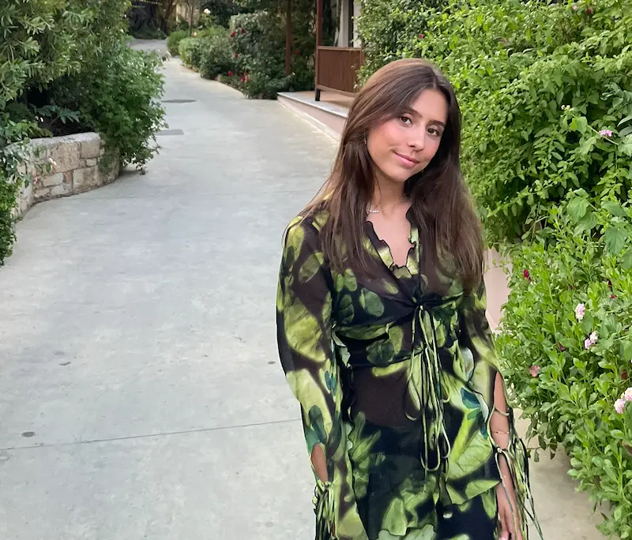

OM MIG
Mit navn er Julie Fox Petersen, og jeg er 23 år gammel. Jeg bor i København S, med min kæreste i vores egen lille lejlighed. Jeg studererer til dagligt til multimediedesigner på KEA, og jeg har en kæmpe passion for digitalt design. Jeg drømmer om i fremtiden at finde et job, hvor jeg kan få lov til at udfolde min kreativitet igennem digitalt design. I gennem mit 1. semester på min uddannelse på KEA, har jeg allerede fået en del færdigheder såsom html, css, javascript, Adobe Illustrator, Premiere pro osv. På denne portfolio-side kan I få et lille indblik i, hvad jeg har lært gennem 1. semester på Multimediedesign.
CV
INFO:
- Email: juliefoxp@gmail.com
- Telefon: +45 20 64 37 37
- By: København s
UDDANNELSE:
- Multimediedesigner, KEA - 1.semester
- Tårnby gymnasium 2019-2022
ERFARING:
- & Other stories, Fields 2022-2025
- Lagkagehuset, CPH airport 2022-2023
- Bilka One stop, Fields 2018-2019
FÆRDIGHEDER:
- HTML, CSS & Javascript
- Adobe illustrator
- Adobe premiere pro
- Figma